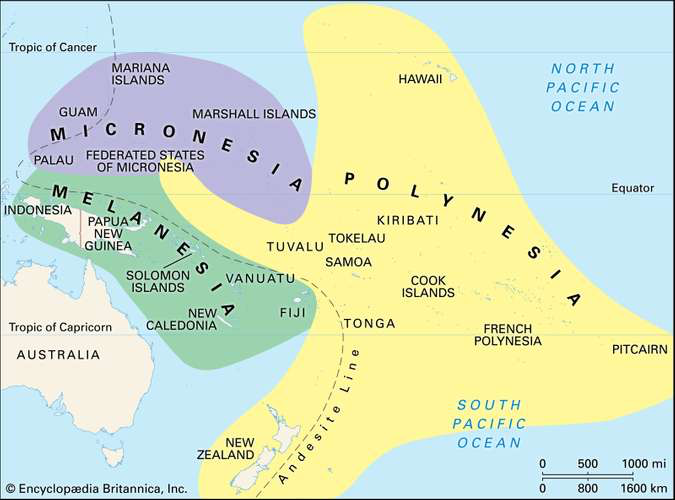
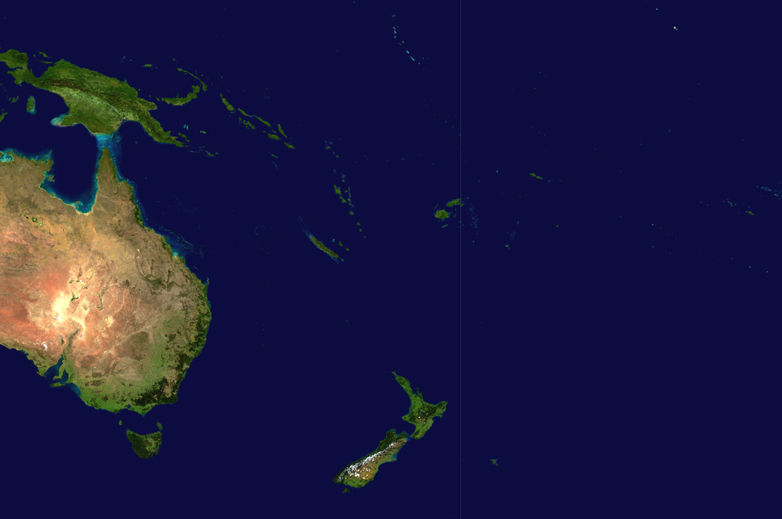
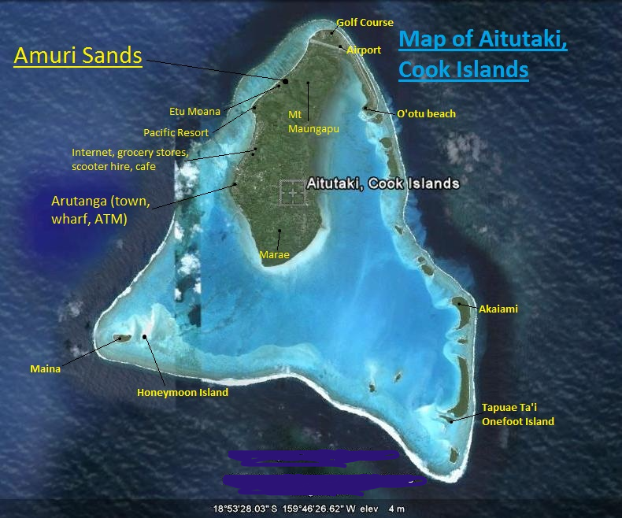
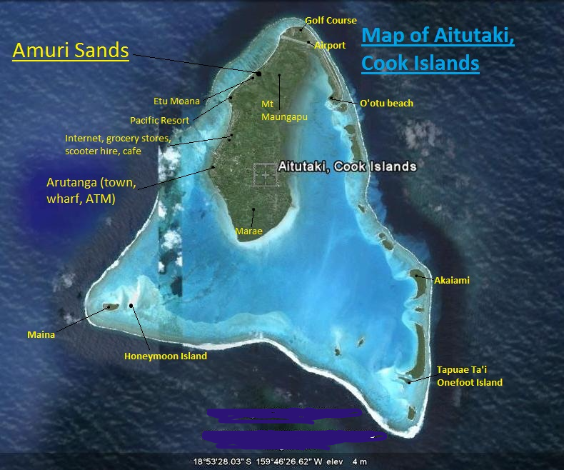

The Pacific Islands
The eastern side of the southern hemisphere of the Pacific Ocean is home to the congregation of three different island cultures: Melanesian, Micronesian, and Polynesian.
 
The great arc of islands located north and east of Australia and south of the Equator is called Melanesia (from the Greek words melas, "black," and nesos, "island") for the predominantly dark-skinned peoples of New Guinea island, the Bismarck Archipelago, Solomon Islands, Vanuatu (the New Hebrides), New Caledonia, and Fiji.
Melanesia was a meeting ground of two cultural traditions and populations: Papuans and Austronesians. The earliest, or Papuan, tradition is ancient. Papuans occupied the Sahul continent (now partly submerged) at least 40,000 years ago. As hunting and gathering peoples whose ways of life were adapted to the tropical rainforest, they occupied the equatorial zone of the continent, which became the vast island of New Guinea after sea levels rose at the end of the Pleistocene.
 

In the eastern Pacific, largely enclosed within a huge triangle formed by the Hawaiian Islands to the north, New Zealand to the southwest, and Easter Island (Rapa Nui) far to the east, are the many ("poly") islands of Polynesia. Other components of this widely scattered collection, again generally from west to east, are Tuvalu, Wallis and Futuna, Tokelau, Samoa (the former Western Samoa), American Samoa, Tonga, Niue, the Cook Islands, and French Polynesia (including the Society, Tuamotu, and Marquesas islands).
One of the principal characteristics of traditional Polynesian cultures is an effective adaptation to and mastery of the ocean environment. The Polynesians were superb mariners, their voyages extended as far as Chile, approximately 2,200 miles (3,500 km) east of Easter Island, but their mastery did not extend merely to the technology involved in shipbuilding and navigation. It also permeated social organization, religion, food production, and most other facets of the culture; they had social mechanisms for coping with the human problems of shipwreck, such as separated families and the sudden loss of large portions of the group.